Jobsheet-9: HTTP Service
Praktikum - Bagian 2 : Getting Data
- Buat component baru dengan nama posts dengan perintah ng g c posts
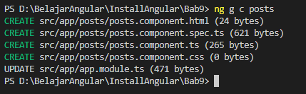
- Untuk menggunakan HTTPService, kita perlu melakukan import HttpModule pada app.module.ts.
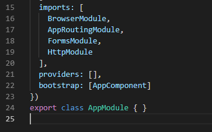
- Setelah kita menambahkan HttpModule pada bagian imports, maka secara otomatis akan menambah imports pada bagian paling atas
- Hint : Jika HttpModule tidak muncul secara otomatis maka anda harus menginstal terlebih dahulu dengan perintah npm i @angular/http
- Modifikasi file posts.component.ts menjadi seperti berikut:
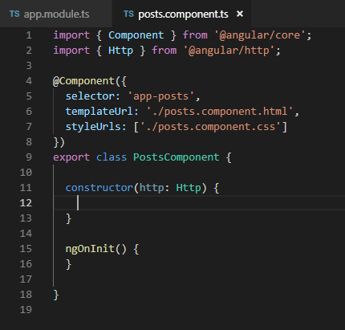
Class Http pada contructor digunakan untuk melakukan HTTP request ke back end.
- Ubah file app.component.html seperti berikut :
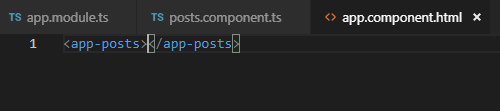
- Jalankan dan Catat hasilnya
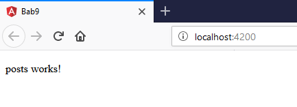
- Bagaimana jika anda lupa melakukan import HttpModule pada langkah ke-2 ? Lakukan commenting pada HttpModule seperti pada kode berikut :
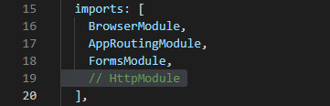
- Apa yang terjadi pada console?
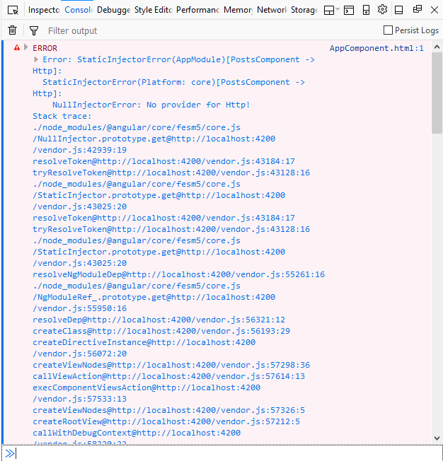
- Lengkapi kode program pada posts.component.ts menjadi :
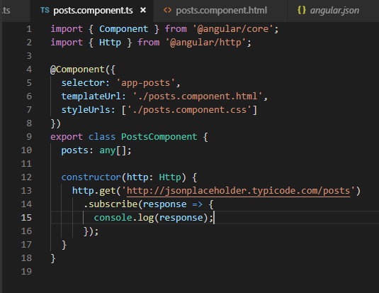
- Jalankan pada browser
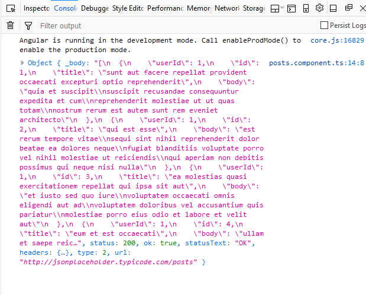
- perbedaan yang terjadi pada console jika kode pada posts.component.ts diubah menjadi :
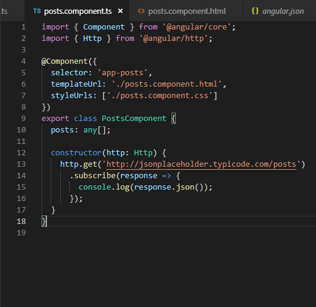
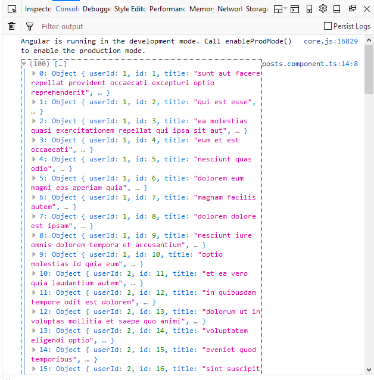
- Untuk menampilkan data pada halaman browser, ubah kode program pada posts.component.html seperti berikut :
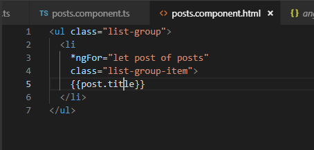
- Ubah kode program pada posts.component.ts :
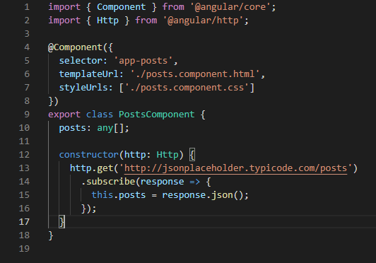
- Jalankan
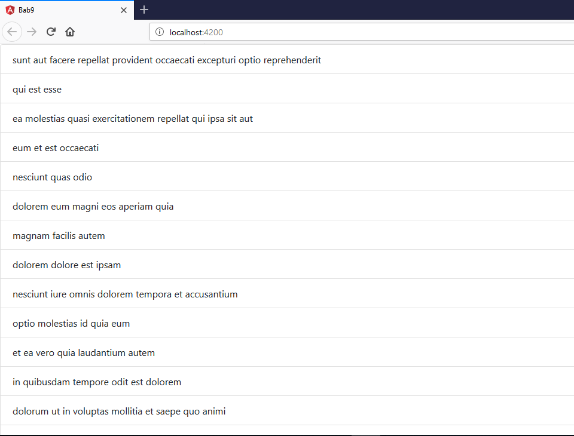
Praktikum - Bagian 3 : Creating Data
- Pertama, tambahkan input elemen pada posts.component.html :
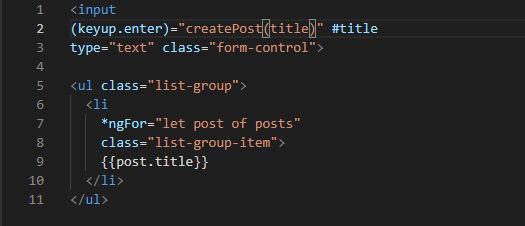
- Modifikasi kode program pada posts.component.ts
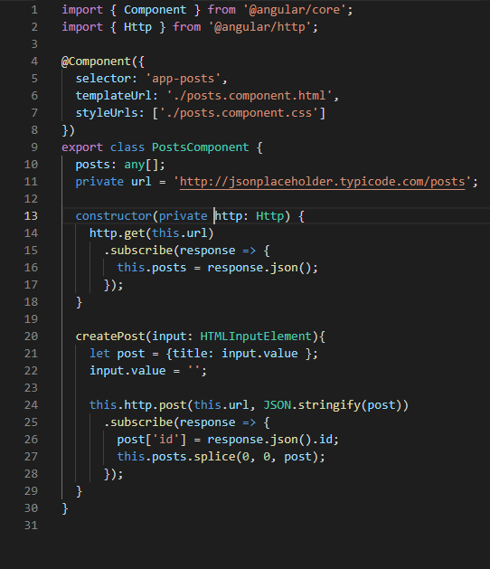
- Simpan dan jalankan pada browser.
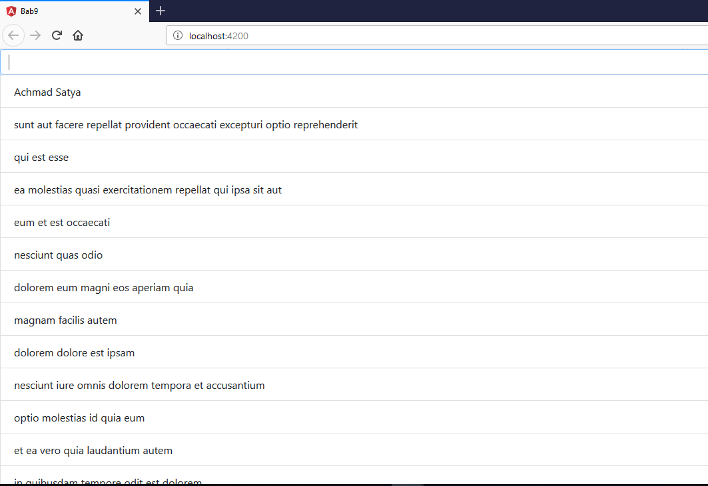
Praktikum - Bagian 4 : Updating Data
- Tambahkan button Update dengan modifikasi kode program seperti di bawah ini :
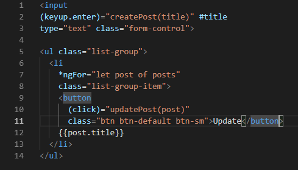
- Tambahkan fungsi updatePost pada posts.ts seperti di bawah :
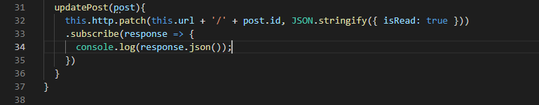
- Simpan dan jalankan pada browser.
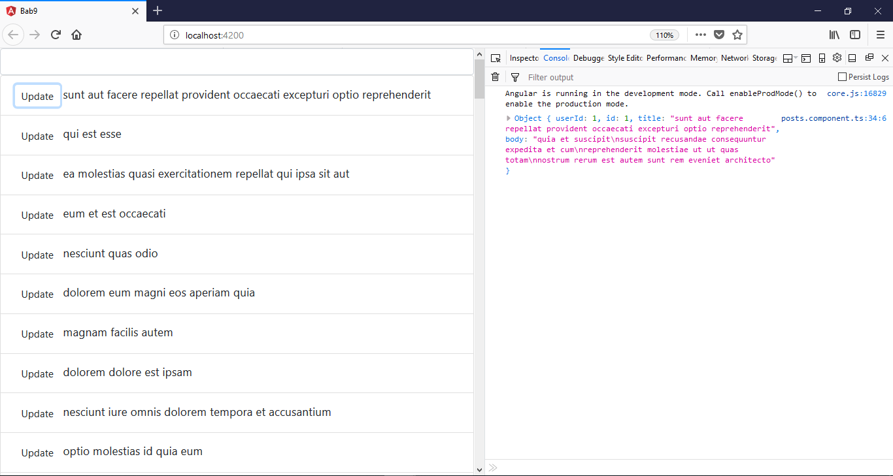
Praktikum - Bagian 5 : Deleting Data
- Tambahkan button Delete dengan modifikasi kode program seperti di bawah ini :

- Tambahkan fungsi deletePost pada posts.ts seperti di bawah :
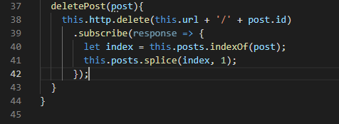
- Simpan dan jalankan pada browser.
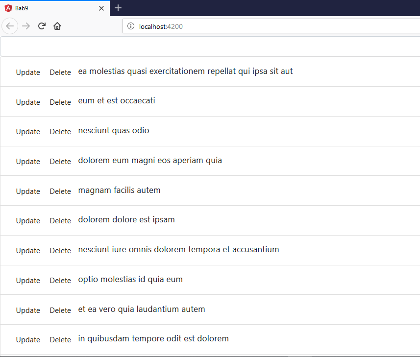